Homepage entry
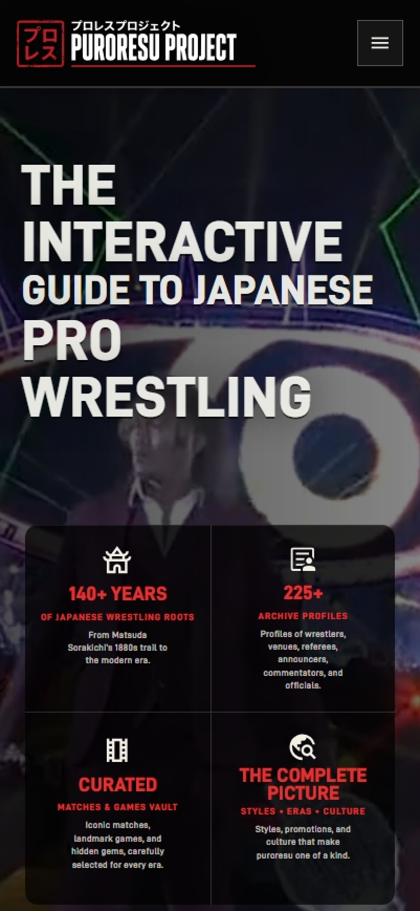
Puroresu Project
A long-running idea I turned into an interactive archive: a way to bring people into the world of Japanese professional wrestling through education, exploration, and context without making the history smaller, flatter, or less strange.
Visit Puroresu ProjectContext and brief
Japanese wrestling has no shortage of information. The difficulty is that the story is distributed across eras, promotions, languages, match lists, biographies, title histories, old media, and years of assumed knowledge.
For someone arriving with curiosity but no map, even a good search result can create five more questions. Who matters here? What came before this match? Why does this venue keep appearing? Which branch of wrestling am I actually watching?
I began Puroresu Project as a way to connect those questions while preserving the depth that makes the subject worth exploring. It became an exercise in information architecture, editorial systems, responsive product design, and the less visible work of making researched content trustworthy.
The problem
A flat catalog would make the material searchable, but not necessarily understandable. A purely editorial story would be easier to follow, but could hide the depth that makes exploration rewarding.
I had to hold both ideas at once: give newcomers a clear first path, then let the system open up into people, eras, styles, rivalries, venues, matches, and cultural artifacts without losing orientation.
I was not trying to simplify the history. I was trying to make the complexity legible.
How I got there
I organized the experience in layers. The Story gives a guided introduction. Timeline and Styles provide historical and conceptual context. Wrestlers, Venues, Lineage, and The Vault become the working archive. Beyond the Ring extends the story into masks, games, magazines, music, and home video culture.
That structure gave each page a different job. The Timeline works like an editorial chronology. Lineage becomes a relationship map. The Vault supports browsing and viewing decisions. Shared navigation and controls hold the system together without forcing every part into the same template.
Editorial information architecture
Each layer answers a different reader need while shared relationships keep the archive connected.
Help a new reader find a clear way into the history.
Establish the time, places, and institutions around the story.
Explore the people, matches, and relationships at the center.
Go deeper into language, style, and the surrounding culture.
Connected across the archive
Solution entry point
The homepage needed to feel alive before it explained itself. I designed the hero around the feeling of old VHS tapes cycling through wrestling clips: grainy, oversized, dramatic, and already in motion when a visitor arrives.
Archive Trails became the guided entry system below that first impression. Instead of dropping someone into a flat catalog, each trail gives them a curated route through the archive, connecting wrestlers, matches, eras, masks, media, and cultural artifacts around a theme.
The device layouts then shape how that entry point behaves, including different imagery and crops to frame the emotion for each context. Desktop works as a broad orientation surface with more paths visible at once, while mobile turns the same material into a closer, more directed top-to-bottom progression for visitors arriving from search or social.
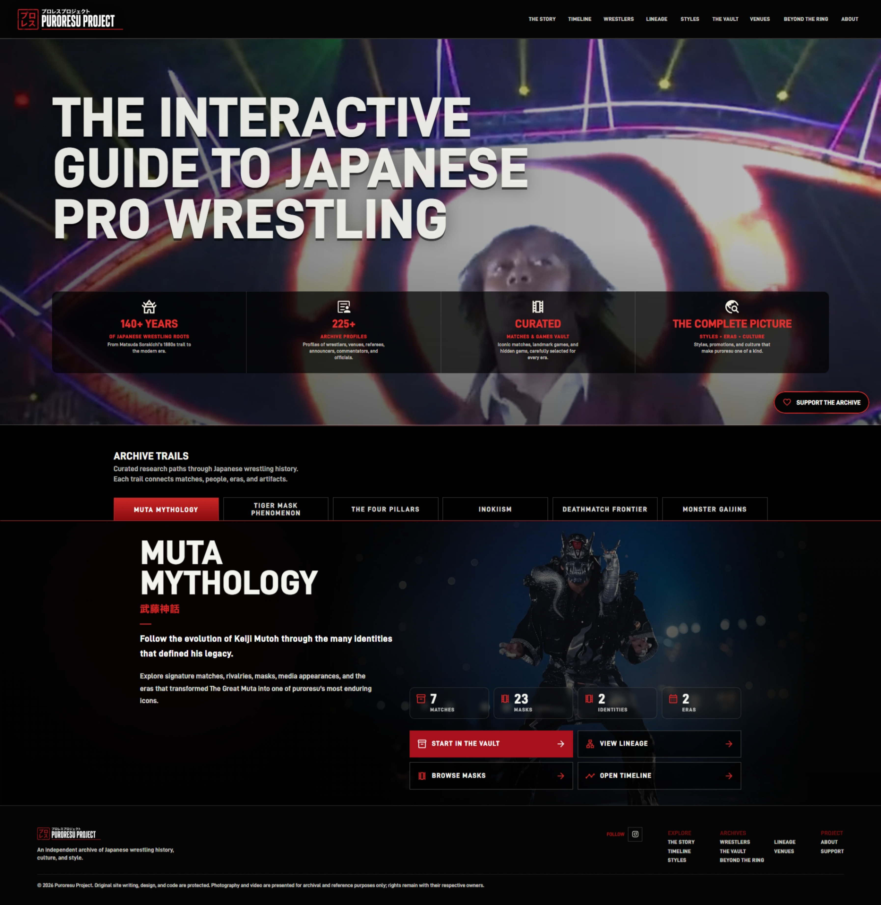
Homepage entry

Archive Trails
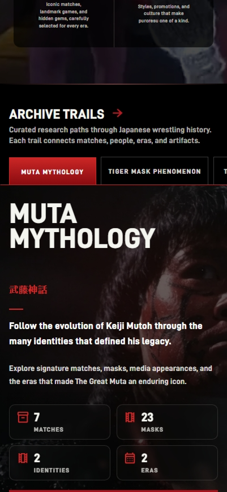
Deeper trail actions
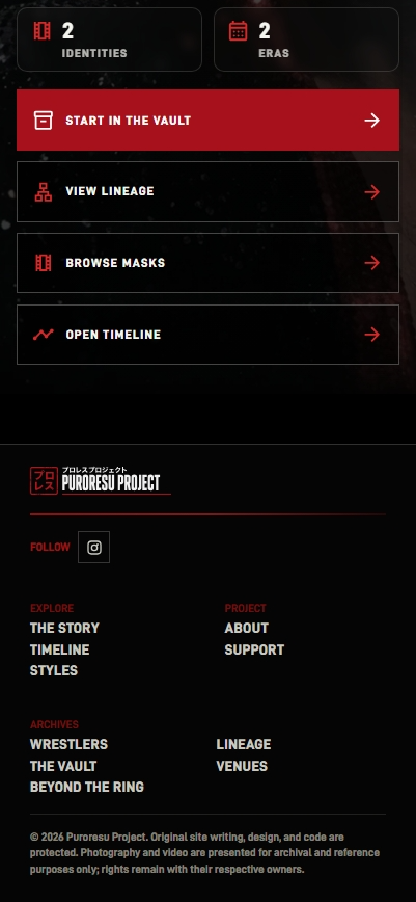
Reduce simultaneous choices and let the trail read as a guided path through one theme at a time.
Expose more of the system early: hero, navigation, stats, trails, and support all visible enough to invite branching.
Experience system
Across the archive, the visual system uses dark surfaces, aged-paper moments, strong condensed typography, and restrained red accents. Reusable controls such as search, filters, cards, detail panels, and navigation create familiarity across the site.
The individual experiences still needed their own behavior. That mattered more than making the component library look perfectly uniform. A historical timeline should not feel like a streaming shelf, and a lineage map should not behave like a profile grid.
Connected data
A biography can explain who Antonio Inoki was. The Lineage view can show where he sits inside the larger history: the roots that shaped him, the institution he created, and the people and movements that carried parts of his philosophy forward.
Selecting Inoki focuses the graph without erasing the surrounding archive. Rikidōzan, the JWA Dojo, and Karl Gotch converge from the left. Typed paths then branch toward wrestlers including Riki Choshu, Tiger Mask, Akira Maeda, and later New Japan generations, with AJW lineages grouped around figures such as Chigusa Nagayo, Dump Matsumoto, Bull Nakano, and Manami Toyota.
The interface turns a data-model decision into a reading experience. Color explains what kind of connection the reader is seeing; direction shows how it moves through time; focus makes one story legible inside a much larger network.
Connection model
Before designing the focused Lineage view, I mapped the broader network across eras: roots, promotions, dojos, trainers, stylistic branches, AJW lineages, and wrestlers who carried ideas forward. The goal was not to show every connection at once, but to understand the archive well enough to reveal one useful path at a time.
The graph is built from canonical nodes and directional links rather than lines drawn for the composition. A full-profile node points back to the wrestler record that owns the person’s identity. Each link carries a specific relationship type, and the interface derives the focused path, summary, legend, and mobile presentation from the same data.
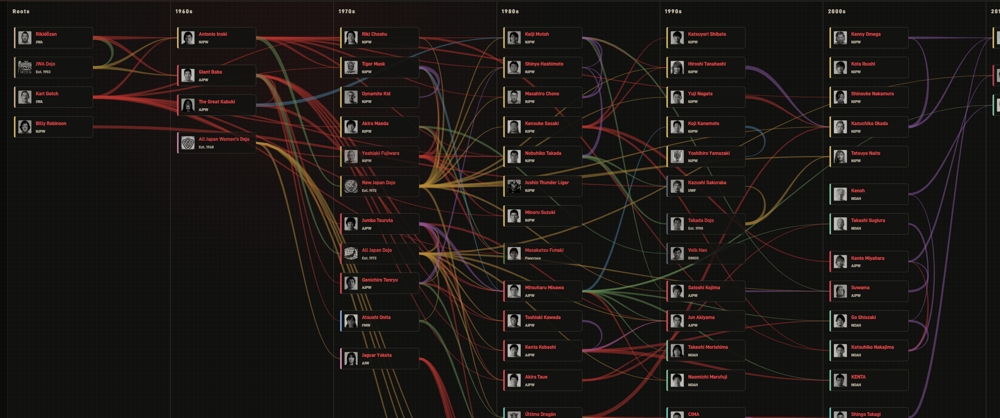
Working archive
Wrestler profiles with biographies, relationships, key matches, and source status.
Timeline moments across five eras, each with a compact documented record.
Curated matches across 17 promotions, connected to context and viewing guidance.
Venue histories with signature moments, regional context, and map exploration.
Content system
As the archive grew, writing directly into pages stopped being responsible. I moved the core collections into canonical data, then generated the browser-ready layer from that source. It created one place to correct a date, relationship, source status, or image reference.
I also built content rules around the mistakes an archive is most likely to make: treating an important tag partner as a rival, turning a broad era into a false exact date, confusing match date with airdate, or presenting an editorial claim as documented history.
Canonical records feed the interface, generated wrappers, and verification checks.
Readable public stories sit on top of a traceable factual layer.
Dates, results, rivalries, ratings, and credits stay broad until the evidence is strong.
Design language
The interface needed to feel specific to the material without becoming a costume. I drew from monochrome ringside photography, VHS contrast, Japanese magazine typography, television graphics, and red editorial marks used to call attention to a name, date, or turning point.
Near-black surfaces create continuity across the archive. White carries the main story. Red is reserved for active states, selected paths, dates, and the words that need to land first. The result feels historical, but the hierarchy and interaction remain contemporary.
ARCHIVAL DARK / VISUAL SYSTEM
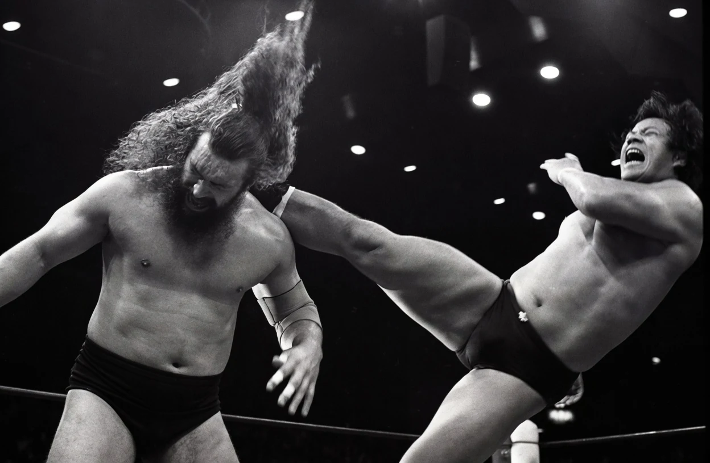
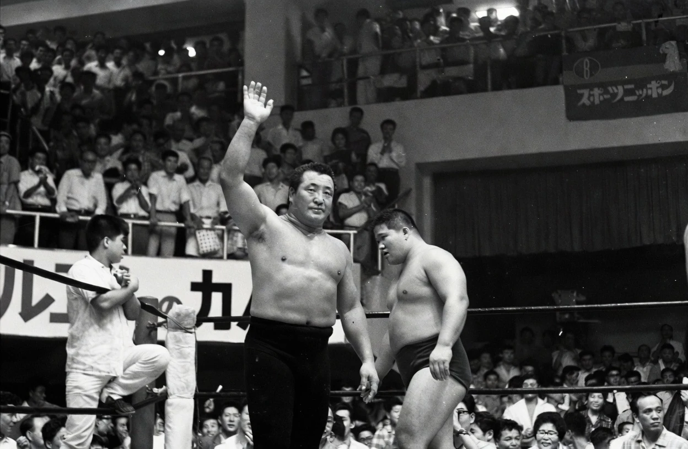
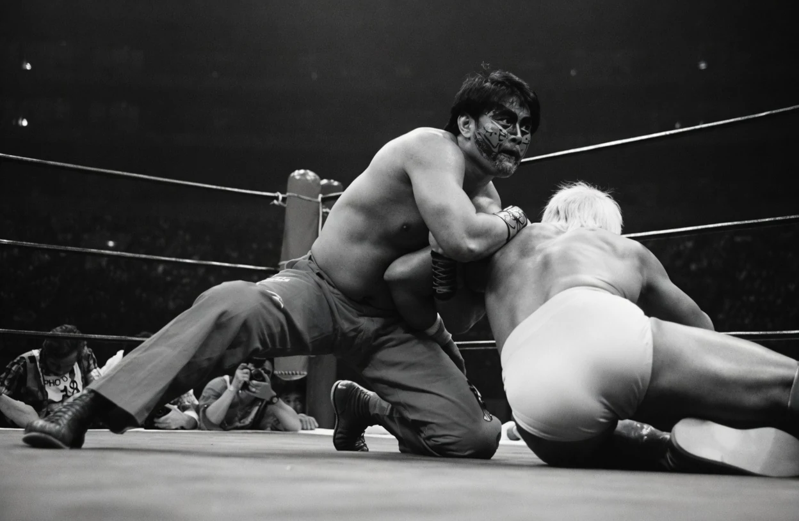
DISPLAY / CONDENSED / UPPERCASE
THE GOLDENCORE PALETTE
#070707#F2EFE7#BC1C23EDITORIAL EMPHASIS
Social system
I extended the archive's dark surfaces, condensed typography, signal red, and layered photography into Instagram carousel posts. The goal was to make social media feel like part of the product ecosystem, not a separate promotion layer.
Each post uses the same editorial grammar as the site: a strong entry image, a focused story arc, and repeated visual cues that help the account become recognizable as people swipe.
The Story
The Story gives newcomers a structured introduction before they branch into profiles, matches, eras, and cultural references. It works less like a static article and more like an orientation path through the archive.
Timeline
The timeline connects eras, promotions, major events, and turning points in a format that supports both quick orientation and slower study.
Wrestler archive
Each profile needed to work alone, but the larger value came from the links between them: training lines, faction turns, important opponents, partners, promotions, styles, and eras.
I treated relationship labels as data with consequences. Rivalries are shown only when the feud or recurring program is documented; mentors, partners, and stablemates remain useful without being mislabeled for the sake of a more dramatic interface.
The profile system also needed a clearer visual rule. Action shots and editorial photos carried energy, but older images often sacrificed recognition: faces were obscured, resolution varied wildly, and some wrestlers became harder to identify than others.
I moved toward curated portrait consistency so every wrestler feels equally important and the archive preserves what they looked like before asking readers to understand their careers.
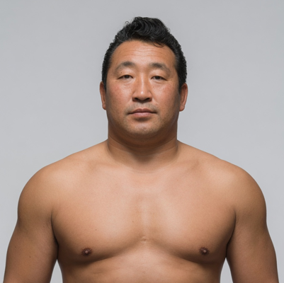
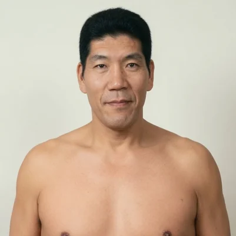
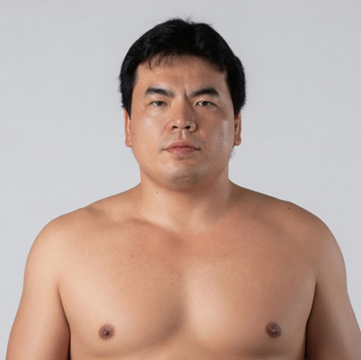
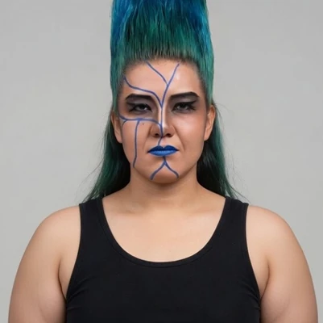
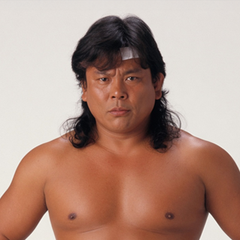
The Vault
The Vault needed to do more than organize matches. It needed to make the act of browsing feel like discovery: tapes, posters, games, and broadcast memory gathered into one room.
Inside that nostalgic shell, match history and viewing guidance stay deliberately separate, helping a reader understand both what happened and why the match is worth their time.
Venues
The venue explorer lets readers browse places as an archive or switch to a map to understand how wrestling history spread across regions. Both views use the same filters and venue records.
Early traction
Instagram performance
Instagram introduced Puroresu Project to a much wider audience. More than four out of five views came from non-followers, while profile visits and bio-link taps showed that people were moving from individual stories toward the larger project.
81.4% of views came from non-followers
Across posts, reels, and stories
From 5,600 profile visits
The audience growth showed that multiple stories were finding readers, not just one post carrying the result.
Website performance
The website data shows that attention continued after the click. Visitors viewed multiple pages and spent more than two minutes actively engaged on average, with archive sections such as Classic Matches, Wrestlers, The Vault, Lineage, and Timeline drawing meaningful traffic.
2,989 were new users
Across archive and story pages
Per active user
Google Analytics attributed 1,465 sessions to Instagram, connecting the social reach to continued exploration on the site.
Sources: Instagram Insights, Google Analytics, and Cloudflare traffic reporting.
Validation
The deeper validation has been operational: can the archive keep growing without losing its internal logic?
I used content audits, duplicate and reference checks, reciprocal relationship reviews, source manifests, broken-path checks, and responsive QA across mobile, tablet, and desktop. Interaction details were tested where archive interfaces tend to fail: long filters, detail panels, touch targets, keyboard focus, reduced motion, and media-heavy pages that change state while the interface is moving.
The archive is live and still evolving. The next meaningful validation step is to watch newcomers use The Story, then see where they choose to go without prompting.
Retrospective
Puroresu Project has made me think differently about what a design system is. The visible components matter, but the deeper system is editorial: what earns an exact date, how uncertainty is shown, where two records should agree, and when a compelling story is not yet a supported fact.
It also reinforced something I believe about complex software. People do not need every detail removed. They need a dependable way to understand where they are, what matters now, and where they can go next.
Visit Puroresu Project